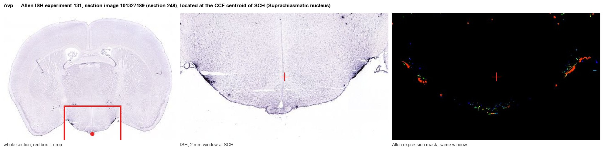

Avp
Spatial tier: STRICT_EXCLUSIVE · Class: NEUROMODULATORY_SIGNAL · Top region: SCH (Suprachiasmatic nucleus) · Positive regions: 7/554
48.2Discovery Score
44.7Targetability Score
CEvidence grade C
What this means: Avp: predicted fine-region profile is strict-exclusive, with 7 positive regions out of 554 (limit 12); direct spatial validation is required.
Function in SCH: evidence, prediction, innovation
- Gene function
- Avp encodes the prepro-hormone cleaved into arginine vasopressin, neurophysin II and copeptin. AVP acts on class-A GPCRs V1a (Gq, vasoconstriction, central actions), V1b (Gq, pituitary ACTH) and V2 (Gs, renal antidiuresis). Parvocellular brain AVP is a local signal, not a circulating hormone.
- Region function
- The suprachiasmatic nucleus is the master circadian pacemaker, entrained by retinal input and timing the subparaventricular zone, DMH and pituitary.
- Published in this region
- direct AVP marks the SCN dorsomedial shell. Mieda et al. 2015 deleted Bmal1 in AVP neurons via Avp-Cre, lengthening and destabilizing free-running period, so AVP-neuron clocks set ensemble period. Stowie et al. 2023 (in vivo GCaMP microendoscopy): individual AVP neurons are unstable oscillators, but pairwise coherence is strongly circadian, peaking in circadian day. Li et al. 2009: V1a knockout alters locomotor rhythms and SCN clock-controlled gene expression.
- Predicted function
- Prediction: the open questions are mechanistic, not existential. AVP from shell neurons should act on V1a receptors of VIP and GRP core neurons to set coupling strength and period; VIP-restricted V1a deletion should reduce rhythm amplitude, and silencing AVP neurons should shorten and destabilize period.
- Innovation
- ★☆☆☆☆ 1/5 AVP is a canonical SCN marker with decades of genetic, imaging and pharmacological work published.
- Tools
- Avp-Cre and Avp-IRES2-Cre knock-in mice, Avp-eGFP reporter rats, floxed Avp and Bmal1, Avpr1a/Avpr1b knockouts; V1a antagonist SR49059 (relcovaptan), V1b SSR149415, V2 tolvaptan; validated AVP and neurophysin-II antibodies.
- References
Direct evidence located at the region

Allen ISH experiment 131, section image 101327189 (section 248): the section that contains the CCF centroid of Suprachiasmatic nucleus according to the Allen image-to-atlas alignment (reference_to_image), with a 2 mm window around that point. Left: whole section, red box = window. Middle: ISH signal. Right: Allen's expression-mask view of the same window. open this image in the Allen viewer
Look it up yourself: Allen Mouse Brain ISH for AvpAllen reference atlas: SCH (structure 286)ABC Atlas MERFISH viewer(in the ABC Atlas choose dataset MERFISH-C57BL6J-638850-CCF, colour cells by gene "Avp" or by parcellation_substructure "SCH")All genes confined to SCH + 3-D brain
Direct spatial evidence
MERFISH REGION LOCATOR

DIRECT ALLEN ISH

DIRECT ALLEN ISH

Regional expression figure

Predicted WMB × fine-CCF profile; not direct full-transcriptome spatial measurement.
Spatial profile
Evidence and specificity
- Evidence status
- PREDICTED_FINE
- Direct sources
- None; predicted localization only
- Exclusive threshold
- 12 positive regions out of 554
- Spatial specificity
- 0.410
- Top-region fraction
- 0.125
- Filter status
- PASS
Interpretation limits
- Cell-type-to-region projection is imputed expression, not direct spatial measurement.
- Adult reference atlases do not establish stability across age, sex, strain, state, or disease.
- Transcript abundance does not guarantee protein abundance or genetic-tool performance.